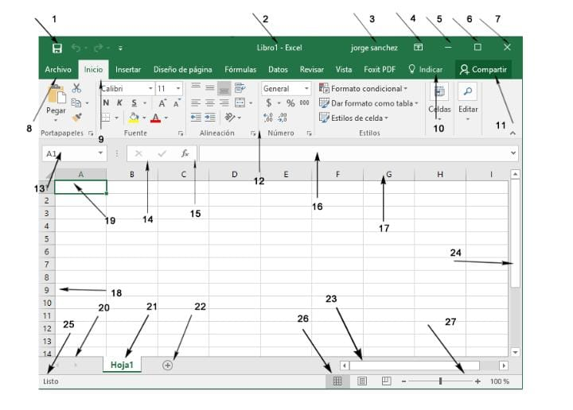
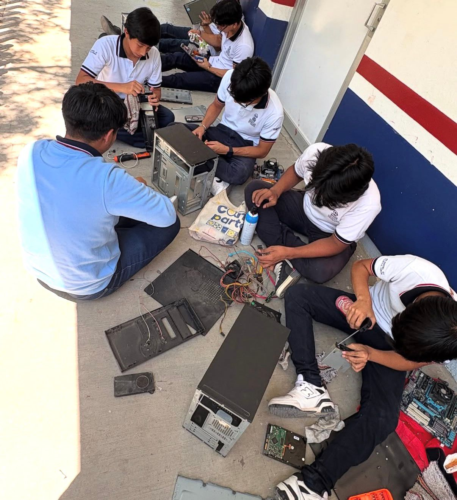
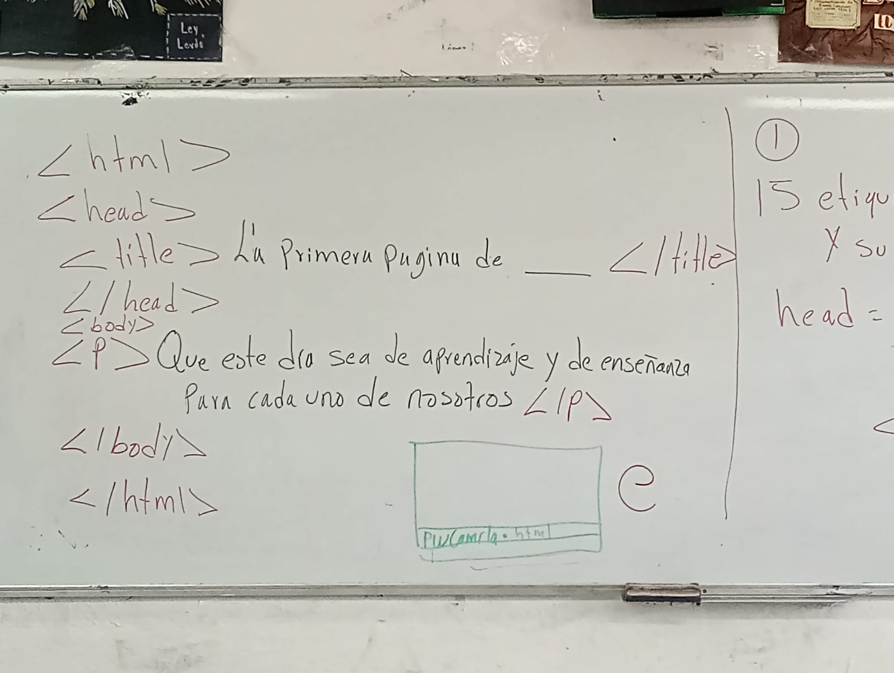
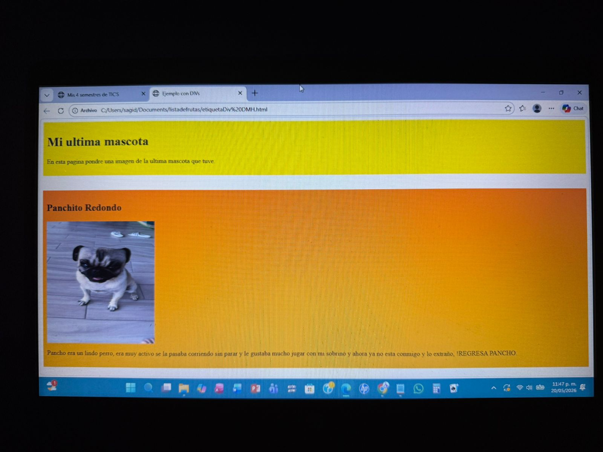

Mi ultimo proyecto escolar sobre mi experiencia en los semestres de TIC'S
En este semestre aprendí a trabajar con hojas de cálculo utilizando fórmulas, tablas y gráficos editar textos. Estas herramientas fueron fundamentales para mejorar mi organización y habilidades tecnológicas.

Durante este semestre comprendí la importancia de las comunidades virtuales y el uso responsable de plataformas digitales. También aprendí mantenimiento preventivo de computadoras y configuración básica de redes de cómputo.

En este semestre desarrollé habilidades de lógica computacional, creación de algoritmos y programación. Además, conocí cómo funcionan los sistemas de información y la importancia del manejo correcto de datos.

En el último semestre aprendí a crear páginas web utilizando HTML, además de aplicar diseño digital para mejorar la apariencia visual de los proyectos. Este semestre ayudo a fortalecer mi creatividad y conocimientos sobre programación.
